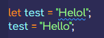

Now moving onto getting data out of the array, I've put data in order into an array, sometimes the order doesn't really matter. So when a piece of data is put into an array each element is assigned an index value similar to how strings have indices. Just in this case it's the entire piece of data instead of a single character. Each element has it's own index, starts off with 0 and then goes upwards. Just like the Strings again.
The below list shows the index value of the data stored at that index value of an array.
- Index Value [0] - Data Value [Charlie]
- Index Value [1] - Data Value [Suzie]
- Index Value [2] - Data Value [Dexter]
To get a piece of data out of an array, this works very similar to how you'd get a character out of a String, for example with a String it would be something like "Charlie"[2] and the output would be "a" because this is the character located at the index of 2. Well this works the same way basically for an array, instead of using the String I would just use the variable name for the array I want to data from.
For example, if I had an array like so {let familyPets = ["Charlie", "Suzie", "Dexter"]} and I wanted to get the value of index 1 then I would do something like {familyPets[1]} and it would give the output of "Suzie". This is because the index starts at 0.
Every array has a length, but the length always has a +1 compared to the index because the length starts at 1, where as the index starts at 0. So for example the length of the array familyPets would be 3 but the index would only go to 2.
When accessing the data from an array it could be a String, number, boolean, truthy or falsy value. It doesn't matter what the data type is, just knowing that the index value to access the data is what I need to know. But with an array every piece of data or element is given a specific number. For example with the same variable familyPets Charlie would be array length of 1 but will be index value of 0, Suzie would be the length value of 2 from the array and index value of 1.
This is because the array gives an order to the data which is the index order basically. Just like the Strings, when trying to access an index that has no current value for instance "Charlie"[10], this would give me the value of undefined because no value has been set this far within the String. And this works similarly with an array. If I try getting the value from familyPets[3] this would be undefined again due to no actual value being set here.
Something interesting that I can do is change the [] square brackets and when this is used on the array, it will first grab the element within that array index and then if I add another right after I can pull the character from a specific index from that element. I've got a linked script file with a small example of this.
Modifying Arrays
Using the same syntax of the square brackets to update an array meaning using this I can change something at a certain index value. The way to do this would be similar to how you would change a variable normally which is by doing:
The same can work for an array in a sense the only difference being that instead of changing the entire array I can specify a singular element that I want to change using the same syntax as before the square brackets. So using the syntax like so familyPets[0] would give me the value of "Charlie" but if did something like familyPets[0] = "NewDog" then this would now hold the value of "NewDog" meaning Charlie would no longer be within the array.
Something else to note is that when trying to change a String like this it will not work but for arrays it does work. So when trying let dog = "Charlie"; and then trying to change a character like dog[0] = "T" it would give the output of "Tharlie" but when running the variable dog again it would still be Charlie meaning it didn't change the original variable data. With changing the array it does keep the changes made because it works slightly different hence me saying similar.
An interesting test with this would be what would happen if I was to set an undefined index with a value that has a bunch of undefined values either side. For example with the same familyPets variable that only goes up to 2 indices (0, 1, 2), if I was to add a new value at the index of 10 like familyPets[10] = "Marley" then something interesting happens. With console it says ["Charlie", "Suzie", "Dexter", {7 empty slots}, "Marley"];. What happens is it actually stores the data at the index value of 10 which I assumed it would but then I had a feeling it might just put it in the next index due to the empty elements.
So I can add data to an array with empty slots between. But remember that when using length it will show that the array has grown until that new piece of data so far the example above the length method would give the output of 11. Since those undefined elements are technically there due to the other piece of data being later within the order. Those array indices that are empty are given the value of undefined since they're not defined yet.
If I was to try doing familyPets[5] with some data set at the index value of 10 it would give the output of undefined since it hasn't been defined any data but it has the falsy value of undefined because that's what it is, empty.
Array - End of Array Addition
This section will basically cover how to add a new element/piece of data to the array. So the way to do this seems pretty primitive and I assume there's a better way to do this, but basically just run variableName.length and it will give the output of the length of the array, meaning that number can be used in code that sets data to a spot within the array because the length is always 1 integer longer than the actual index value. So if the output is 3 then just do variableName[3] = "value".
Okay I just finished the video and there is a better way to add something to the end of the array without doing the funky stuff above. It's just there to show it works I suppose or that it can be done this way.
Conclusion
Arrays are indexed, each element or piece of data has a corresponding index (but the counting starts at 0 for the index). The last index in the array is always one number less than the length of the array and the length is always one number greater than the index.
Using the index to access specific elements and view the contents, but also allows us to modify what is already currently inside the array/modify those slots. Unless it's a const array.